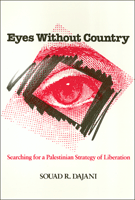

<body bgcolor="#FFFFFF" text="#000000" link="#0000FF" vlink="#CC0000" alink="#CC0000"><center><hr width="350" size="1" align="center" noshade>A strategy of nonviolent civilian resistance for Palestinian sovereignty<hr width="350" size="1" align="center" noshade><p><a href="https://cdcshoppingcart.uchicago.edu/Cart/ChicagoBook.aspx?ISBN=9781566392402&&PRESS=temple" target="_top">Buy this book!</a> | <a href="https://cdcshoppingcart.uchicago.edu/Cart/Cart.aspx?PRESS=temple" target="_top">View Cart</a> | <a href="https://cdcshoppingcart.uchicago.edu/Cart/Cart.aspx?PRESS=temple" target="_top">Check Out</a></p><p></p></center><!--none//--><h1>Eyes Without Country</h1>
<H2>Searching for a Palestinian Strategy of Liberation</H2>
<h3>Souad R. Dajani</h3>
<P>cloth 1-56639-240-3 $79.50, Oct 94, <FONT COLOR=#990033>Available</FONT>
<br>paper 1-56639-241-1 $38.95, Sep 94, <FONT COLOR=#990033>Available</FONT>
<br>Electronic Book 1-43990-604-1 $38.95 <FONT COLOR=#990033>Available</FONT>
<BR> 256 pp
6x9
</P><BLOCKQUOTE><I>"</I>Eyes Without Country<I> may be the most cogent statement of the strategic challenge facing Palestinians since the intifada began. Its conclusions can and will be debated widely, but they will be ignored at peril."</I>
<br>&#151<b>Christopher Kruegler</b>, President, The Albert Einstein Institution<I></I></BLOCKQUOTE>
<p>Since Israel's occupation of the West Bank and Gaza Strip in 1967, the quest for just and lasting peace has been a fountainhead of debate, negotiation, and violent friction. Souad Dajani traces the Palestinians' struggle and argues for a strategy of nonviolent civilian resistance based on deterrence and defense. This strategy would defeat Israel's political will to maintain their occupation and prepare Palestinians for a time beyond the interim period of self-rule agreed upon by Israel and the PLO in September 19932.
<p>Dajani's formulation of nonviolent civilian resistance is examined against a backdrop of early developments in Mandate Palestine, the impact of Zionist ideology, and the realities of life for Palestinians under occupation. Her assessment of the role of the PLO, objectives of the Palestinian National Movement, developments since the Gulf War, and other factors crucial to an effective strategy raises critical questions surrounding the operation of nonviolent techniques for the Palestinian community, Israeli politics, and international actors, most prominently the United States.
<BR>&nbsp;<h2>Reviews</h2>
<p><I>"The Middle East is forever perceived as a graveyard of hopes. Danjani's unique character as a Palestinian-American feminist, sociologist, and nonviolent theorist, makes her especially well-suited to the task of critiquing the trends and conditions which are at once remnants of disillusionment and emerging possibilities on which to set the foundation of a stable and secure Palestinian state."</I>
<br>&#151<b>Deena R. Hurwitz</b>, Editor of <I>Walking the Red Line: Israelis in Search of Justice for Palestine</I>
<p><I>"Insightful, refreshingly straightforward, and eminently readable. Danjani's survey of the background of Palestinian diaspora, occupation and resistance is clear, concise, and comprehensive. Her discussion of the </I>Intifada<I> is remarkable for its balance and breadth. Her thorough investigation of nonviolent civil resistance as a Palestinian strategy defines a vital approach for achieving Palestinian Liberation. This book should be read by anyone interested in the Middle East or in civil disobedience."</I>
<br>&#151<b>Jamal R. Nassar</b>, Editor, <I>Arab Studies Quarterly</I>, and Professor of Political Science, Illinois State University
<p><I>"Those interested in exploring Palestinian historiography and self-understanding, especially as it relates to possible strategies for achieving a Palestinian State, would be well advised to read [this book] meticulously, for the Palestinian sensibility is laid out with artistry and a power of conviction."</I>
<br>&#151<b>Reuven Gal</b>, Director, The Carmel Institute for Social Studies, Israel
<BR>&nbsp;<h2>Contents</h2><P>
<p>Acknowledgments
<br>Introduction
<br>1. The Context and Background of the <I>Intifada</I>
<br>2. Twenty Years of Occupation: Palestinian Resistance Before the <I>Intifada</I>
<br>3. The <I>Intifada</I> as Palestinian Civilian Resistance
<br>4. Nonviolent Civilian Resistance: Theoretical Underpinnings
<br>5. Assessing Strategic Directions: Prospects for a Strategy of Nonviolent Civilian Resistance
<br>Conclusion
<br>Abbreviations
<br>Notes
<br>Index
</P><BR>&nbsp;<H2>About the Author(s)</H2>
<P><b>Souad R. Dajani</b> is Assistant Professor of Sociology at Antioch College, Ohio.</P>
<BR><H2>Subject Categories</H2>
<p><A HREF="/tempress/history.html" TARGET="_top">History</a>
<BR><A HREF="/tempress/philosophy.html" TARGET="_top">Philosophy and Ethics</a>
</p>
<p align="center"><a href="https://cdcshoppingcart.uchicago.edu/Cart/ChicagoBook.aspx?ISBN=9781566392402&&PRESS=temple" target="_top">Buy this book!</a> | <a href="https://cdcshoppingcart.uchicago.edu/Cart/Cart.aspx?PRESS=temple" target="_top">View Cart</a> | <a href="https://cdcshoppingcart.uchicago.edu/Cart/Cart.aspx?PRESS=temple" target="_top">Check Out</a></p><p><font face="Arial" size="1"><a href="copyright.html" onMouseOver="window.status='Web Copyright Policy';return true;" onMouseOut="window.status=''" title="Web Copyright Policy">&copy;</a> 2015 <a href="http://www.temple.edu" target="new" onMouseOver="window.status='Link to Temple University home page';return true;" onMouseOut="window.status=''" title="Link to Temple University home page">Temple University</a>. All Rights Reserved. http://www.temple.edu/tempress/titles/1066_reg.html</font></p>